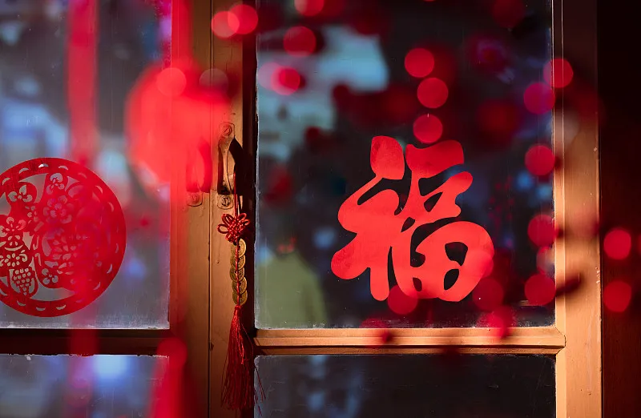

除夕/春节
———万象更新庆团圆
历史沿革
春节起源于殷商时期的岁首祭祀，甲骨文中有"岁终大傩"的记载。汉代定型为"正旦节"，居延汉简显示戍边将士要"饮酒三巡"。唐代出现拜年帖，新疆阿斯塔那墓出土的"人日"剪纸证实了年俗传播之远。1914年民国政府正式定名"春节"，2006年被列入首批国家级非物质文化遗产。
年俗体系
辞旧迎新：
苏州"腊月二十四"扫尘要用竹枝扎帚，寓意"节节高"；
团圆守岁：
闽南"围炉"宴席必有一道头尾完整的鱼，象征有始有终；
祈福纳吉：
天津杨柳青年画需经"勾、刻、印、绘、裱"五道工序；
庆典狂欢：
广东醒狮采青要完成"高竿取锦"等高难度动作。
文化内涵
春节凝聚着"天人合一"的哲学智慧，中国历法博物馆藏清代《春牛图》显示，立春时辰测算要结合二十八宿方位。韩国"旧正"保留掷柶游戏，越南"Tết"节必摆金桔盆栽，形成"同源异彩"的文化景观。现代科学研究表明，年夜饭中的饺子、年糕等食物组合符合冬季热量需求。
当代传承
中央广播电视总台"春晚"运用8K+AR技术呈现年俗；航天员在空间站展示"太空春联"。2024年"数字庙会"平台上线，用户可穿戴触觉手套体验虚拟剪窗花、写福字。文旅部启动"春节记忆"工程，用3D扫描技术保存各地特色年俗。
